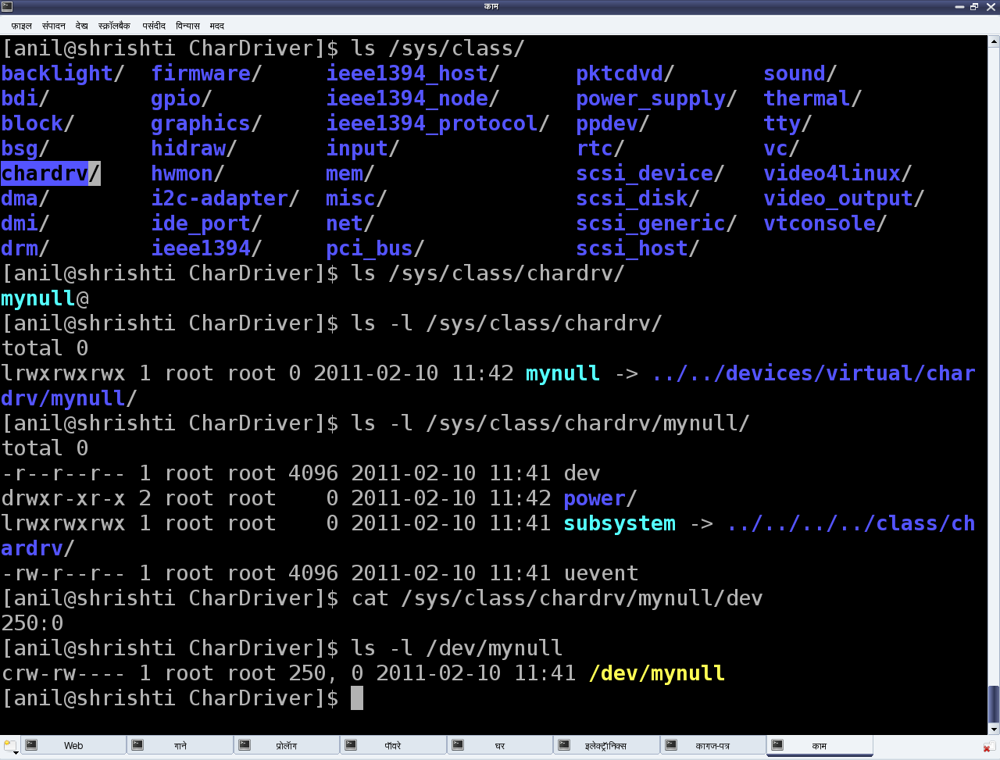

Character Device Files - Creation & Operations
This fifth article, which is part of the series on Linux device drivers, is continuation of the various concepts of character drivers and their implementation, dealt with in the previous article.
In our previous article, we noted that even with the registration for <major, minor> device range, the device files were not created under the /dev, rather Shweta had to create them by hand using mknod. However, on further study, Shweta figured out a way for the automatic creation of the device files using the udev daemon. She also learnt the second step for connecting the device file with the device driver – "Linking the device file operations to the device driver functions". Here are her learnings.
Automatic creation of device files
Earlier in kernel 2.4, automatic creation of device files was done by the kernel itself, by calling the appropriate APIs of devfs. However, as kernel evolved, kernel developers realized that device files are more of a user space thing and hence as a policy only the users should deal with it, not the kernel. With this idea, now kernel only populates the appropriate device class & device info into the /sys window for the device under consideration. And then, the user space need to interpret it and take an appropriate action. In most Linux desktop systems, the udev daemon picks up that information and accordingly creates the device files.
udev can be further configured using its configuration files to tune the device file names, their permissions, their types, etc. So, as far as driver is concerned, the appropriate /sys entries need to be populated using the Linux device model APIs declared in <linux/device.h> and the rest would be handled by udev. Device class is created as follows:
struct class *cl = class_create(THIS_MODULE, "<device class name>");
and then the device info (<major, minor>) under this class is populated by:
device_create(cl, NULL, first, NULL, "<device name format>", …);
where first is the dev_t with the corresponding <major, minor>.
The corresponding complementary or the inverse calls, which should be called in chronologically reverse order, are as follows:
device_destroy(cl, first);
class_destroy(cl);
Refer to Figure 9, for the /sys entries created using "chardrv" as the <device class name> and "mynull" as the <device name format>. That also shows the device file, created by udev, based on the <major>:<minor> entry in the dev file.

In case of multiple minors, device_create() and device_destroy() APIs may be put in for-loop, and the <device name format>string could be useful. For example, the device_create() call in a for-loop indexed by 'i' could be as follows:
device_create(cl, NULL, MKDEV(MAJOR(first), MINOR(first) + i), NULL, "mynull%d", i);
File Operations
Whatever system calls or more commonly file operations we talk of over a regular file, are applicable to the device files as well. That’s what we say a file is a file, and in Linux almost everything is a file from user space perspective. The difference lies in the kernel space, where virtual file system (VFS) decodes the file type and transfers the file operations to the appropriate channel, like file system module in case of a regular file or directory, corresponding device driver in case of a device file. Our discussion of interest is the second case.
Now, for VFS to pass the device file operations onto the driver, it should have been told about that. And yes, that is what is called registering the file operations by the driver with the VFS. This involves two steps. (The parenthesised text below refers to the ‘null driver’ code following it.) First, is to fill in a file operations structure (struct file_operations pugs_fops) with the desired file operations (my_open, my_close, my_read, my_write, …) and to initialize the character device structure (struct cdev c_dev) with that, using cdev_init(). The second step is to hand this structure to the VFS using the call cdev_add(). Both cdev_init() and cdev_add() are declared in <linux/cdev.h>. Obviously, the actual file operations (my_open, my_close, my_read, my_write) also had to be coded by Shweta. So, to start with, Shweta kept them as simple as possible, so as to say, as easy as the “null driver”.
The Null driver
Following these steps, Shweta put all the pieces together to attempt her first character device driver. Let’s see what was the outcome. Here’s the complete code:
#include <linux/module.h>
#include <linux/version.h>
#include <linux/kernel.h>
#include <linux/types.h>
#include <linux/kdev_t.h>
#include <linux/fs.h>
#include <linux/device.h>
#include <linux/cdev.h>
static dev_t first; // Global variable for the first device number
static struct cdev c_dev; // Global variable for the character device structure
static struct class *cl; // Global variable for the device class
static int my_open(struct inode *i, struct file *f)
{
printk(KERN_INFO "Driver: open()\n");
return 0;
}
static int my_close(struct inode *i, struct file *f)
{
printk(KERN_INFO "Driver: close()\n");
return 0;
}
static ssize_t my_read(struct file *f, char __user *buf, size_t len, loff_t *off)
{
printk(KERN_INFO "Driver: read()\n");
return 0;
}
static ssize_t my_write(struct file *f, const char __user *buf, size_t len,
loff_t *off)
{
printk(KERN_INFO "Driver: write()\n");
return len;
}
static struct file_operations pugs_fops =
{
.owner = THIS_MODULE,
.open = my_open,
.release = my_close,
.read = my_read,
.write = my_write
};
static int __init ofcd_init(void) /* Constructor */
{
int ret;
struct device *dev_ret;
printk(KERN_INFO "Namaskar: ofcd registered");
if ((ret = alloc_chrdev_region(&first, 0, 1, "Shweta")) < 0)
{
return ret;
}
if (IS_ERR(cl = class_create(THIS_MODULE, "chardrv")))
{
unregister_chrdev_region(first, 1);
return PTR_ERR(cl);
}
if (IS_ERR(dev_ret = device_create(cl, NULL, first, NULL, "mynull")))
{
class_destroy(cl);
unregister_chrdev_region(first, 1);
return PTR_ERR(dev_ret);
}
cdev_init(&c_dev, &pugs_fops);
if ((ret = cdev_add(&c_dev, first, 1)) < 0)
{
device_destroy(cl, first);
class_destroy(cl);
unregister_chrdev_region(first, 1);
return ret;
}
return 0;
}
static void __exit ofcd_exit(void) /* Destructor */
{
cdev_del(&c_dev);
device_destroy(cl, first);
class_destroy(cl);
unregister_chrdev_region(first, 1);
printk(KERN_INFO "Alvida: ofcd unregistered");
}
module_init(ofcd_init);
module_exit(ofcd_exit);
MODULE_LICENSE("GPL");
MODULE_AUTHOR("Anil Kumar Pugalia <email@sarika-pugs.com>");
MODULE_DESCRIPTION("Our First Character Driver");
Then, Shweta repeated the usual build with new test steps as follows:
- Build the driver (.ko file) by running make.
- Load the driver using
insmod. - List the loaded modules using
lsmod. - List the major number allocated using
cat /proc/devices. - “null driver” specific experiments (Refer to Figure 10 for details).
- Unload the driver using
rmmod.

Summing up
Shweta was surely happy as all on her own she got a character driver written, which works same as the driver for the standard device file /dev/null. To understand what it means, check for yourself the <major, minor> tuple for /dev/null, and similarly also try out the echo and cat commands with it.
But one thing started bothering Shweta. She had got her own calls (my_open, my_close, my_read, my_write) in her driver, but how are they working so unusually unlike any regular file system calls. What’s so unusual? Whatever I write, I get nothing when read – isn’t that unusual, at least from regular file operations’ perspective. Any guesses on how would she crack this nut? Watch out for the next article.